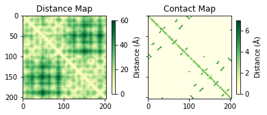

...ANNOTATIONS...
HEADER VIRAL PROTEIN 18-AUG-20 7JTL
TITLE STRUCTURE OF SARS-COV-2 ORF8 ACCESSORY PROTEIN
COMPND MOL_ID: 1;
COMPND 2 MOLECULE: ORF8 PROTEIN;
COMPND 3 CHAIN: A, B;
COMPND 4 SYNONYM: ORF8, NON-STRUCTURAL PROTEIN 8, NS8;
COMPND 5 ENGINEERED: YES
SOURCE MOL_ID: 1;
SOURCE 2 ORGANISM_SCIENTIFIC: SEVERE ACUTE RESPIRATORY SYNDROME CORONAVIRUS
SOURCE 3 2;
...ATOM RECORDS...
ATOM 1 N GLN A 18 40.917 33.173 126.601 1.00 73.92 N
ATOM 2 CA GLN A 18 42.025 33.162 125.645 1.00 73.89 C
ATOM 3 C GLN A 18 41.754 32.204 124.493 1.00 67.88 C
ATOM 4 O GLN A 18 42.414 31.177 124.374 1.00 66.48 O
ATOM 5 CB GLN A 18 43.339 32.782 126.337 1.00 73.82 C
ATOM 6 N GLU A 19 40.764 32.527 123.665 1.00 60.90 N
ATOM 7 CA GLU A 19 40.434 31.695 122.517 1.00 50.80 C
ATOM 8 C GLU A 19 40.928 32.273 121.201 1.00 50.81 C
ATOM 9 O GLU A 19 41.122 31.517 120.240 1.00 47.32 O
ATOM 10 CB GLU A 19 38.918 31.467 122.431 1.00 55.27 C 4 Working with structures
PDB format
Biomolecular structures can be saved in different formats such as PDB, mmCIF, XML, etc. The PDB format is the most common format and is supported by all visualization and docking programs. In this format the annotations for the structure are stored as different tags such as TITLE, COMPND, SOURCE, REMARK, etc. The atomic coordinates are saved under ATOM and HETATM tags. The PDB class of Bio library has a PDBParser() function to instantiate a PDB parser object which can be used to read and write structure files in pdb format. The get_structure function takes two arguments — a name for the new structure object and a pdb file name.
from Bio.PDB import *
structure = PDBParser().get_structure("Protease", "7jtl.pdb")The structure object has a attribute header that stores the annotations for the structure as a dictionary.
print("The structure title is:",structure.header["name"])
print("The structure resolution is:",structure.header["resolution"])
print("The structure keywords are:",structure.header["keywords"])The structure title is: structure of sars-cov-2 orf8 accessory protein
The structure resolution is: 2.04
The structure keywords are: sars-cov-2, sars2, covid-19, coronavirus, accessory protein, host- factor restriction, rna virus, immune evasion, mhc-i, open reading frame 8, viral proteinThe coordinates in the structure object has a hierarchical organization as shown in the diagram below. The structure object is at the top of the hierarchy which has one or more models. Each model can have one or more chains; and so on. This organization, in programming terms, can be thought of as a nested list. To navigate through the structure object we can either use for loop or some of the available in-built functions. The later being computationally efficient choice. The objects at each level in this organization has dedicated functions and attribute to get more information about the level.
Iterating the hierarchical organization using tandem for loops. The code below creates a dictionary having chain names as keys and a list of residues in that chain as values.
import collections
chain_residues = collections.defaultdict(list)
for model in structure:
for chain in model:
for residue in chain:
if(residue.resname != 'HOH'):
chain_residues[chain.id].append(residue.resname)
print(chain_residues)defaultdict(<class 'list'>, {'A': ['GLN', 'GLU', 'CYS', 'SER', 'LEU', 'GLN', 'SER', 'CYS', 'THR', 'GLN', 'HIS', 'GLN', 'PRO', 'TYR', 'VAL', 'VAL', 'ASP', 'ASP', 'PRO', 'CYS', 'PRO', 'ILE', 'HIS', 'PHE', 'TYR', 'SER', 'LYS', 'TRP', 'TYR', 'ILE', 'ARG', 'VAL', 'GLY', 'ALA', 'ARG', 'LYS', 'SER', 'ALA', 'PRO', 'LEU', 'ILE', 'GLU', 'LEU', 'CYS', 'VAL', 'ASP', 'GLU', 'SER', 'LYS', 'SER', 'PRO', 'ILE', 'GLN', 'TYR', 'ILE', 'ASP', 'ILE', 'GLY', 'ASN', 'TYR', 'THR', 'VAL', 'SER', 'CYS', 'LEU', 'PRO', 'PHE', 'THR', 'ILE', 'ASN', 'CYS', 'GLN', 'GLU', 'PRO', 'LYS', 'LEU', 'GLY', 'SER', 'LEU', 'VAL', 'VAL', 'ARG', 'CYS', 'SER', 'PHE', 'TYR', 'GLU', 'ASP', 'PHE', 'LEU', 'GLU', 'TYR', 'HIS', 'ASP', 'VAL', 'ARG', 'VAL', 'VAL', 'LEU', 'ASP', 'PHE', 'ILE', 'NA'], 'B': ['GLN', 'GLU', 'CYS', 'SER', 'LEU', 'GLN', 'SER', 'CYS', 'THR', 'GLN', 'HIS', 'GLN', 'PRO', 'TYR', 'VAL', 'VAL', 'ASP', 'ASP', 'PRO', 'CYS', 'PRO', 'ILE', 'HIS', 'PHE', 'TYR', 'SER', 'LYS', 'TRP', 'TYR', 'ILE', 'ARG', 'VAL', 'GLY', 'ALA', 'ARG', 'LYS', 'SER', 'ALA', 'PRO', 'LEU', 'ILE', 'GLU', 'LEU', 'CYS', 'VAL', 'ASP', 'GLU', 'ALA', 'SER', 'PRO', 'ILE', 'GLN', 'TYR', 'ILE', 'ASP', 'ILE', 'GLY', 'ASN', 'TYR', 'THR', 'VAL', 'SER', 'CYS', 'LEU', 'PRO', 'PHE', 'THR', 'ILE', 'ASN', 'CYS', 'GLN', 'GLU', 'PRO', 'LYS', 'LEU', 'GLY', 'SER', 'LEU', 'VAL', 'VAL', 'ARG', 'CYS', 'SER', 'PHE', 'TYR', 'GLU', 'ASP', 'PHE', 'LEU', 'GLU', 'TYR', 'HIS', 'ASP', 'VAL', 'ARG', 'VAL', 'VAL', 'LEU', 'ASP', 'PHE', 'ILE']})The Selection module in Bio.PDB has unfold_entities function that facilitates navigation through different levels in the structure object. This function takes two arguments – an entity list and the target level. The targen level is a single letter code via Atom, Residue, Chain, Model, or Structure. E.g. we can get all the atoms in a structure object using Selection.unfold_entities(structure, 'A'). The diagram below shows the different arguments for the unfold_entities function to unpack at different levels starting at the structure level. Note that structure here refers to the name of the structure object instantiated using PDBParser().
Quiz: Write a code to get a dictionary having chain names as keys and a list of residues in that chain as values using unfold_entities().
Show answer
chain_residues2 = collections.defaultdict(list)
residues_all = Selection.unfold_entities(structure,"R")
[chain_residues2[r1.get_parent().id].append(r1.resname)\
for r1 in residues_all if r1.resname != 'HOH']
print(chain_residues2)4.1 Sequence from pdb file
The parse function in the Bio.SeqIO module can be used to retrive the sequences of polymers in the pdb file. There are two different types of sequences that can be retrieved. 1) sequence from the ATOM record and 2) sequence from the SEQRES record (if present). The residues which are disordered in the structure would not appear in the sequence retrived using the pdb-atom argument while those residues would be there in the output with pdb-seqres argument.
%%capture --no-stdout
from Bio import SeqIO
for record in SeqIO.parse("7jtl.pdb", "pdb-atom"):
print("Chain", record.annotations["chain"])
print(record.seq)Chain A
QECSLQSCTQHQPYVVDDPCPIHFYSKWYIRVGARKSAPLIELCVDEXXSKSPIQYIDIGNYTVSCLPFTINCQEPKLGSLVVRCSFYEDFLEYHDVRVVLDFI
Chain B
QECSLQSCTQHQPYVVDDPCPIHFYSKWYIRVGARKSAPLIELCVDEAXXXSPIQYIDIGNYTVSCLPFTINCQEPKLGSLVVRCSFYEDFLEYHDVRVVLDFIfrom Bio import SeqIO
for record in SeqIO.parse("7jtl.pdb", "pdb-seqres"):
print("Chain", record.annotations["chain"])
print(record.seq)Chain A
SNAQECSLQSCTQHQPYVVDDPCPIHFYSKWYIRVGARKSAPLIELCVDEAGSKSPIQYIDIGNYTVSCLPFTINCQEPKLGSLVVRCSFYEDFLEYHDVRVVLDFI
Chain B
SNAQECSLQSCTQHQPYVVDDPCPIHFYSKWYIRVGARKSAPLIELCVDEAGSKSPIQYIDIGNYTVSCLPFTINCQEPKLGSLVVRCSFYEDFLEYHDVRVVLDFIThe residue object
To get a list of residues within an object at any level above residue, we can use the get_residue function. To get the residue name and id for a particular residue, resname and id attributes for the residue object can be used. The get_parent function returns the corresponding chain for a residue object. The get_list function for the residue object return a list having all the atoms within that residue.
ctr=0
prot_seq=""
for residue in model.get_residues():
if(ctr==5):
break
print(residue.resname, residue.id[1])
prot_seq+=residue.resname
ctr+=1
print(prot_seq)GLN 18
GLU 19
CYS 20
SER 21
LEU 22
GLNGLUCYSSERLEUTo convert the sequence in three letter code to single letter code, we can use SeqUtils package available in biopython. The seq1() function returns single letter sequence for a three letter sequence. Similarly, to convert single letter sequence to three letter we have seq3() function.
from Bio.SeqUtils import seq1
seq1(prot_seq)'QECSL'In case the structure has some modified residues then custom mapping of three letter code to single letter code can be done using the custom_map keyword argument to seq1() function. E.g., let say a protein has a phosphorylated serine residue for which the three letter code is SEP and there is no standard single letter code for this. We can add custom mapping for SEP to S as follows.
prot_seq+="SEP"
print(seq1(prot_seq)) #without custom map
print(seq1(prot_seq,custom_map={"SEP": "S"}))QECSLX
QECSLS4.2 Atom object
The information within an atom object can be accessed using different functions specific of a particular property. E.g., to get the name and coordinates for an atom, get_name and get_coord functions can be used. Similarly, to modify a value for any property, functions with set_ prefix can be used.
res_list = list(structure[0]["A"].get_residues())
print(res_list[3])
atoms_resi3 = res_list[3].get_list()
print(atoms_resi3)
print(atoms_resi3[1].get_coord())<Residue SER het= resseq=21 icode= >
[<Atom N>, <Atom CA>, <Atom C>, <Atom O>, <Atom CB>, <Atom OG>]
[ 44.851 36.104 119.41 ]4.3 Distance Calculations
The distance between any two atoms can be easily calculated using the - operator.
ca_3 = res_list[3].get_list()[1]
ca_15 = res_list[15].get_list()[1]
distance = ca_3 - ca_15 # distance between two atoms
print(distance)10.335114Calulating Ca-Ca distance matrix
C-alpha distance matrix is a visual tool to analyze intra-molecular interactions in a protein structure. This matix has pairwise distances for all Ca atoms. The distance matrix can be converted to a contact map using a distance threshold.
from scipy.spatial.distance import squareform
import matplotlib.pyplot as plt
atom_list = Selection.unfold_entities(structure, "A")
ca_ca_dist = []
ca_atom_list = [x for x in atom_list if "CA" in x.name]
for x in range(len(ca_atom_list)):
for y in range(x + 1,len(ca_atom_list)):
ca_ca_dist.append(ca_atom_list[x]-ca_atom_list[y])
dist_mat = squareform(ca_ca_dist)
## calculate contact map
cont_map = dist_mat.copy()
cont_map[cont_map>7]=0fig, ax = plt.subplots(1,2, sharey=True)
a = ax[0].imshow(dist_mat, cmap="YlGn")
ax[0].set_title("Distance Map")
b = ax[1].imshow(cont_map, cmap="YlGn")
ax[1].set_title("Contact Map")
fig.colorbar(a, ax=ax[0], shrink=0.5, label="Distance ($\AA$)")
fig.colorbar(b, ax=ax[1], shrink=0.5, label="Distance ($\AA$)")
plt.show()
4.4 Interface residues
The Bio.PDB has NeighborSearch function that is useful for calculating neighboring residues for a given selection of atoms. This function can be used to find interface residues in a multimeric complex. For this, we first need to define atoms selections having atoms for each of the monomeric subunits. Then we need to call this functions for each subunit to get the surrounding residues for both the subunits.
A_atoms = Selection.unfold_entities(structure[0]["A"], "A")
B_atoms = Selection.unfold_entities(structure[0]["B"], "A")Search atoms around chain A.
ns = NeighborSearch(A_atoms)
contacts_B = []
for atom in B_atoms:
close_atoms = ns.search(atom.coord, 3)
if len(close_atoms)>0:
for a in close_atoms:
contacts_B.append(a.get_parent().get_id()[1])
print("Residues of chain B around chain A are:")
print(', '.join(map(str, contacts_B)))Residues of chain B around chain A are:
314, 20, 339, 120, 120, 24, 118, 119, 307, 115, 115, 341, 51, 53, 119, 115, 310, 358, 349, 387, 387, 201, 403Search atoms around chain B.
ns = NeighborSearch(B_atoms)
contacts_A = []
for atom in A_atoms:
close_atoms = ns.search(atom.coord, 3)
if len(close_atoms)>0:
for a in close_atoms:
contacts_A.append(a.get_parent().get_id()[1])
print("Residues of chain A around chain B are:")
print(', '.join(map(str, contacts_A)))Residues of chain A around chain B are:
20, 53, 120, 120, 118, 119, 214, 115, 115, 213, 51, 53, 287, 115, 262, 18, 50, 119, 275, 272, 285, 282, 2904.5 Binana
BINANA (BINding ANAlyzer) is a python library that can be used for protein-ligand binding analysis. The tool is of particular use when analyzing protein-ligand docking results. The source code is available for download. After download the file, unzip the archive and add the path of the location where binana is there to sys.path as shown below. You should now be able to import binana.
import sys
sys.path.append("<fullpath>/binana-2.1/python/")
import binanaThe first thing that we need to do is to load the receptor and the ligand files. Once we have the these two files as binana objects we can proceed with interaction analysis. The interactions class has a set of functions for retriving different types of inter-molecular interactions. E.g., getting a list of hydrogen bonds between the receptor and the ligand using get_hydrogen_bonds(). This function returns a dictionary having information about each hydrogen bond between the receptor and the ligand. Similarly, we can get information about all types of intermolecular interactions (including hydrogen bonding) using get_all_interactions function.
ligand, receptor = binana.load_ligand_receptor.from_files("<fullpath>/binana-2.1/python/example/ligand.pdbqt", \
"<fullpath>/binana-2.1/python/example/receptor.pdbqt")
hbond_inf = binana.interactions.get_hydrogen_bonds(ligand, receptor)
for hbond_label in hbond_inf["labels"]:
print(hbond_label)('A:CHT(1):N1(14)', 'A:CHT(1):H1(16)', 'A:ASP(157):OD2(285)', 'LIGAND', {'distance': 2.6500811308335455, 'angle': 16.087842801376098})
('A:CHT(1):O6(22)', 'A:ASN(156):2HD2(276)', 'A:ASN(156):ND2(274)', 'RECEPTOR', {'distance': 2.9006795755477723, 'angle': 35.51562311681741})all_inf = binana.interactions.get_all_interactions(ligand, receptor)
all_inf.keys()
all_inf["hydrogen_bonds"]#delete
all_inf.keys()dict_keys(['closest', 'close', 'electrostatic_energies', 'active_site_flexibility', 'hydrophobics', 'hydrogen_bonds', 'halogen_bonds', 'ligand_atom_types', 'pi_pi', 'cat_pi', 'salt_bridges', 'metal_coordinations', 'ligand_rotatable_bonds'])all_data = binana.output.dictionary.collect_all(all_inf)print(len(all_data["hydrogenBonds"]))
for x in all_data["hydrogenBonds"]:
print(x)2
{'ligandAtoms': [{'chain': 'A', 'resID': 1, 'resName': 'CHT', 'atomName': 'N1', 'atomIndex': 14}, {'chain': 'A', 'resID': 1, 'resName': 'CHT', 'atomName': 'H1', 'atomIndex': 16}], 'receptorAtoms': [{'chain': 'A', 'resID': 157, 'resName': 'ASP', 'atomName': 'OD2', 'atomIndex': 285}], 'metrics': {'distance': 2.6500811308335455, 'angle': 16.087842801376098}}
{'ligandAtoms': [{'chain': 'A', 'resID': 1, 'resName': 'CHT', 'atomName': 'O6', 'atomIndex': 22}], 'receptorAtoms': [{'chain': 'A', 'resID': 156, 'resName': 'ASN', 'atomName': 'ND2', 'atomIndex': 274}, {'chain': 'A', 'resID': 156, 'resName': 'ASN', 'atomName': '2HD2', 'atomIndex': 276}], 'metrics': {'distance': 2.9006795755477723, 'angle': 35.51562311681741}}